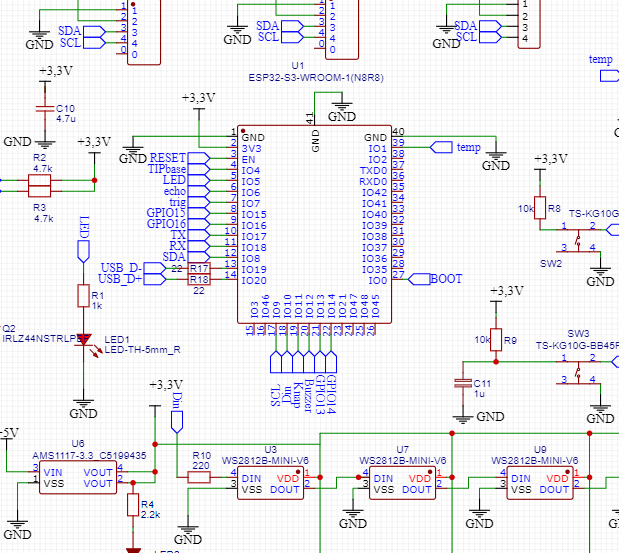

ESP32-S3-WROOM-1 (N8R8)
Pinoversigt til det specialfremstillede ESP32-S3-print i det vedlagte skematikudsnit. Dette er ikke et almindeligt ESP32 DevKit.
Signaloversigt
GPIO-numrene er aflæst fra netetiketterne i det tilsendte diagramudsnit. Vær opmærksom på, at nogle sensorforbindelser og resten af skemaet ikke er synlige.
| Funktion / netnavn | GPIO | Bemærkning |
|---|---|---|
| LED | 5 | Digital udgang. Boardets LED-kreds |
| Knap | 11 | Digital indgang; ekstern 10 kΩ pull-up fremgår ved knap i udsnittet; tryk mod GND aflæses som 0 |
| Buzzer | 12 | Udgang; aktiv/passiv buzzertype kan ikke fastslås i udsnittet |
| Din / WS2812B | 10 | Data til den første adressebare RGB-LED, via 220 Ω |
| trig (ultralyd) | 7 | Trigger-udgang |
| echo (ultralyd) | 6 | Echo-indgang; vær opmærksom på 3,3 V-signaler |
| SDA (I²C) | 8 | I²C datalinje |
| SCL (I²C) | 9 | I²C kloklinje |
| temp | 1 | Temperatursignal; sensortype og digital/analog type er ikke vist |
| TIPbase | 4 | Signal mærket TIPbase; ikke frit uden kontrol |
| TX / RX | 17 / 18 | Printets mærkede UART-signaler, ikke standard UART0 TXD0/RXD0 |
| BOOT | 0 | Strapping-pin og BOOT-knap; ikke almindeligt input under opstart uden omtanke |
| USB D− / D+ | 19 / 20 | Reserveret til USB på dette print, via seriemodstande |
| GPIO15 / GPIO16 | 15 / 16 | Udførte signaler mærket GPIO15 / GPIO16; øvrig forbindelse ikke vist |
| GPIO13 / GPIO14 | 13 / 14 | Udførte signaler mærket GPIO13 / GPIO14; øvrig forbindelse ikke vist |
Skematikudsnit
Følgende er et udsnit, ikke et komplet kredsløbsdiagram. Kontrollér komponenternes tilslutning og forsyningsspænding i hele skemaet.

Vigtigt før fysisk tilslutning
- 3,3 V GPIO: ESP32-S3-indgange tåler ikke 5 V. Mange HC-SR04-moduler sender 5 V på Echo; brug egnet niveaukonvertering eller en 3,3 V-kompatibel sensor, hvis printet ikke allerede har tilpasning.
- USB: GPIO 19 og 20 er optaget af D−/D+ på dit print. De er ikke forslag til almindelige LED- eller sensortilslutninger.
- Opstart: GPIO 0 bruges til BOOT; GPIO 0/3/45/46 er strapping-pins. Undlad ændringer, som kan forhindre opstart.
- N8R8 og flash/PSRAM: Modulvariantens interne forbindelser begrænser hvilke GPIO der kan bruges; undgå GPIO 26–37 til generelle tilslutninger uden at kontrollere modulets datablad.
- WS2812B: Diagramudsnittet viser 3,3 V-forsyning og GPIO 10 til Din; pixeltallet kan ikke bestemmes sikkert i udsnittet. Brug lav lysstyrke som udgangspunkt og kontrollér strømforbruget.
- Temperatur: Netnavnet temp går til GPIO 1, men hverken sensor eller grænseflade ses tydeligt i dette udsnit. Brug ikke en vilkårlig analog/digital målemetode, før typen er kendt.
Korte MicroPython-eksempler
LED på GPIO 5
from machine import Pin
from time import sleep
led = Pin(5, Pin.OUT)
while True:
led.value(1 - led.value())
sleep(0.5)Knap på GPIO 11 (aktiv lav)
from machine import Pin
knap = Pin(11, Pin.IN, Pin.PULL_UP)
print("Trykket" if knap.value() == 0 else "Ikke trykket")I²C-scan på GPIO 8 og 9
from machine import Pin, I2C
i2c = I2C(0, sda=Pin(8), scl=Pin(9), freq=100000)
print([hex(a) for a in i2c.scan()])NeoPixels på GPIO 10
from machine import Pin
from neopixel import NeoPixel
ANTAL_PIXELS = 3 # Eksempel: tilpas til printets faktiske antal
pixels = NeoPixel(Pin(10), ANTAL_PIXELS)
for i in range(ANTAL_PIXELS):
pixels[i] = (10, 0, 0)
pixels.write()Du finder også fungerende startfiler i mappen eksempler/ i ZIP-arkivet.
Wokwi er ikke selve printet
Wokwi-linket starter et ESP32-S3 DevKitC-1 med MicroPython, som simulerer den samme chipfamilie, men ikke dit specialfremstillede print. Tilføj komponenterne i Wokwi, og forbind dem til de samme GPIO-numre. For eksempel: LED på 5, knap på 11, NeoPixel Din på 10, I²C SDA på 8 og SCL på 9.
Wokwi: ESP32-S3 og MicroPython ↗ · Espressif: ESP32-S3 GPIO ↗